Chitose
Chitose · Hokkaido
Chitose
Highlighted on the Hokkaido map.
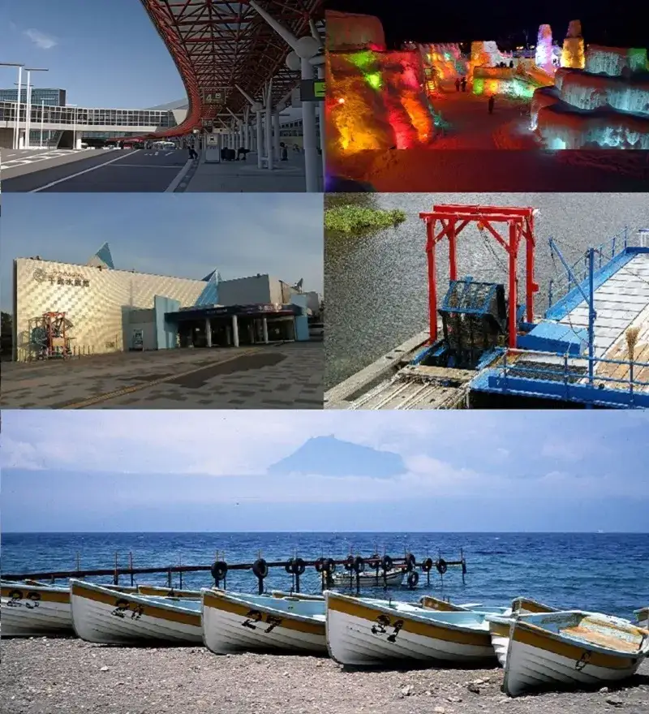
Stay
ピエス千歳S4
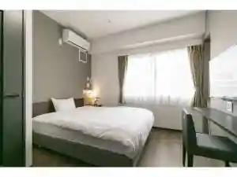
Piesu Chitose S4
HOTEL CHITOSE AJiTO
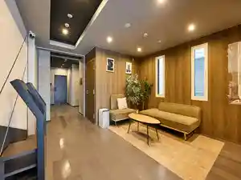
Hotel Chitose Ajito
Piece Chitose S1（ピエス 千歳 エスワン）
Piece Chitose S1 ( Piesu Chitose Esuwan )
Piece Chitose S2
Piece Chitose S2
天然温泉 鶴舞の湯 ドーミーイン千歳（2026/6/24オープン）
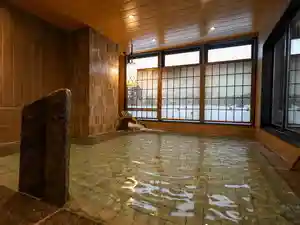
Tennen Onsen Tsurumai No Yu Doomiiin Chitose ( 2026/6/24 Oopun )
クイーンズホテル千歳
Kuiinzuhoteru Chitose
ホテルエリアワン千歳（HOTEL AREAONE）
Hoterueriawan Chitose ( Hotel Areaone )
千歳第一ホテル
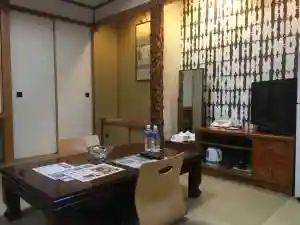
Chitose Daiichihoteru
ホテルクラッセステイ千歳
Hoterukurassesutei Chitose
コンフォートホテル千歳（2026年6月15日新規オープン）
Konfootohoteru Chitose ( 2026 Nen 6 Gatsu 15 Nisshin Ki Oopun )
ホテルラフィナート千歳
Hoterurafinaato Chitose
ロテル ド コーポ千代田 ２Ｂ
Roteru Do Koopo Chiyoda 2 B
Dining
北海道増毛漁港直送 遠藤水産 千歳千代田町店
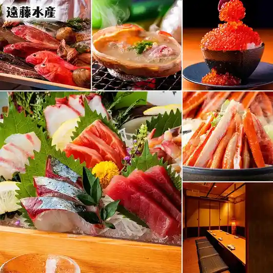
Hokkaidou Mashike Gyokou Chokusou Endou Suisan Chitose Chiyoda Machi Mise
いろはにほへと 千歳店

Irohanihoheto Chitose Mise
隠れ 昭和酒場 てげてげ
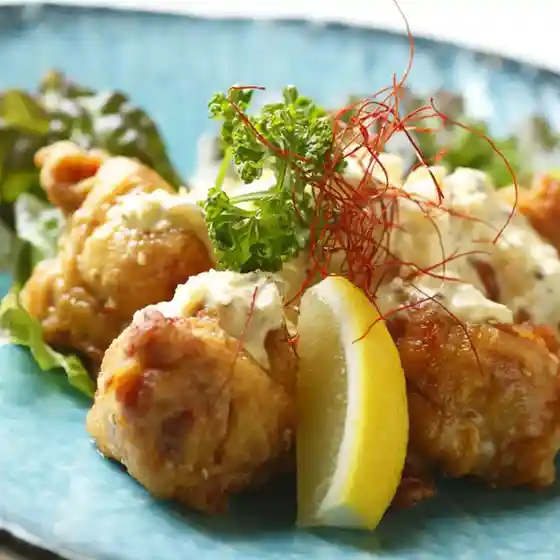
Kakure Shouwa Sakaba Tegetege
串鳥番外地 千歳中央大通店
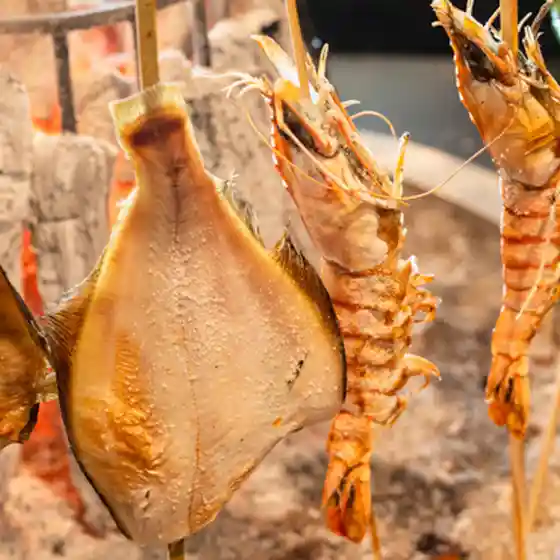
Kushi Tori Bangai Chi Chitose Chuuoudai Toori Mise
しゃぶしゃぶ月艶 -GETSUEN-
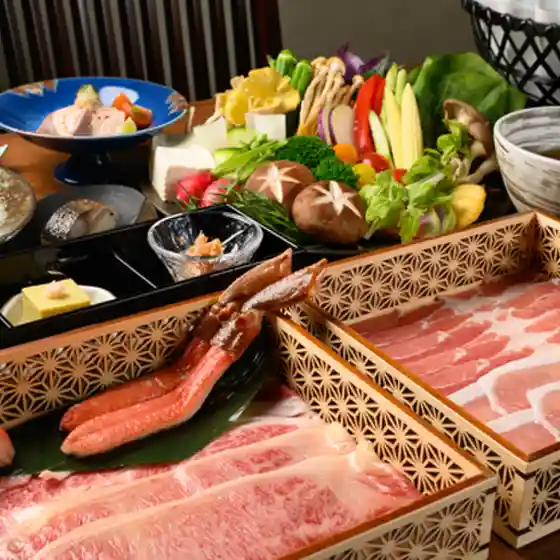
Shabushabu Gatsu Tsuya -Getsuen
ハスカップ ザ・ガーデン
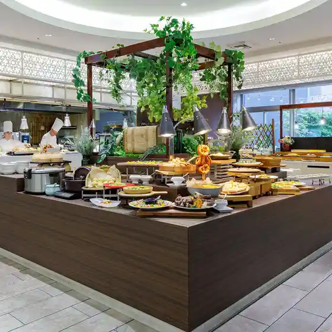
Hasukappu Za Gaaden
山の猿 千歳店

Yama No Saru Chitose Mise
北海道の幸とお酒 たかふじ
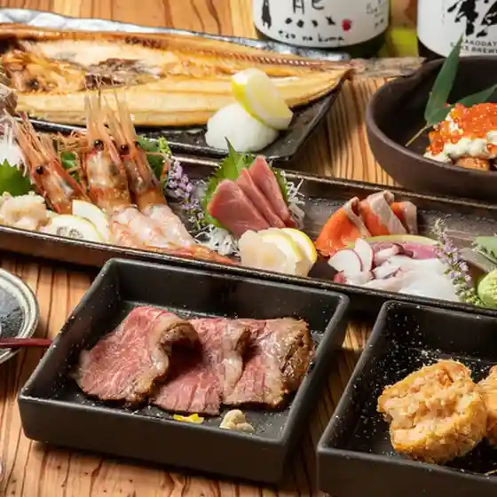
Hokkaidou No Sachi Too Sake Takafuji
串揚げ くずみ
Kushi Age Kuzumi
鮨処 北の華
Sushi Tokoro Kita No Hana
北海道まるごとダイニング うまいっしょ！ 千歳店
Hokkaidou Marugoto Dainingu Umaissho ! Chitose Mise
キリンビアレストラン ハウベ
Kirinbiaresutoran Haube
炉端焼レストラン 志古津
Robata Yaki Resutoran Kokorozashi Ko Tsu
海鮮市場
Kaisen'Ichiba
プロント 新千歳空港店
Puronto Shinchitosekuukou Mise
炭火焼肉 金剛園 末広亭
Sumibi Yakiniku Kongou Sono Suehiro Tei
Mellow
Mellow
專心
Senshin
炭火串焼き えびすこ
Sumibi Kushiyaki Ebisuko
ほうりん
Hourin
黒ひげKITCHEN516
Kuro Hige Kitchen516
千歳生ラムジンギスカンらむ匠
Chitose Nama Ramujingisukan Ramu Takumi
焼鳥 ばんぶう
Yakitori Banbuu